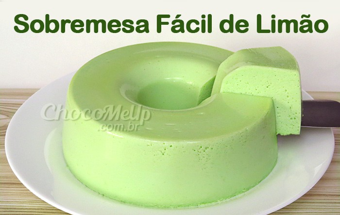

Essa é a história do meu pudim de limão

Ele não era um pudim qualquer. Enquanto todos os seus irmãos de vitrine nasciam da mesmice reconfortante do leite condensado com calda de açúcar queimado, Pudim tinha uma faísca diferente. Na sua receita, a confeiteira dona Clara havia adicionado raspas finíssimas e o suco bem concentrado de dois limões-sicilianos. Essa pequena ousadia o deixara com um amarelo suave, meio aveludado, e um aroma cítrico que cortava o ar doce da padaria.
Como muito pudim